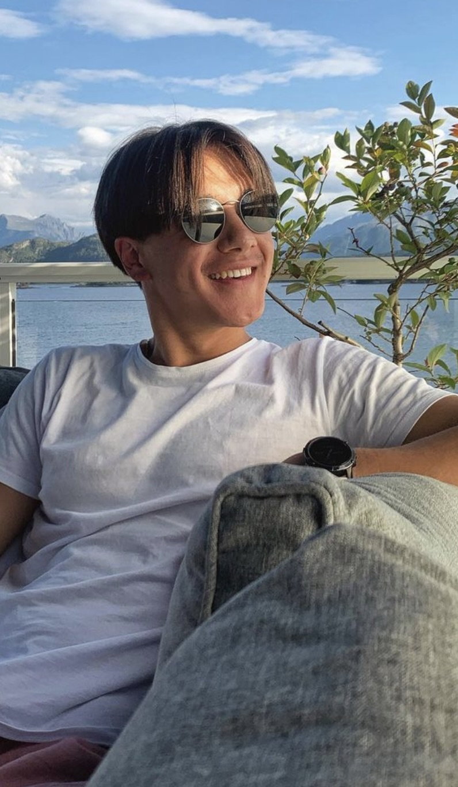
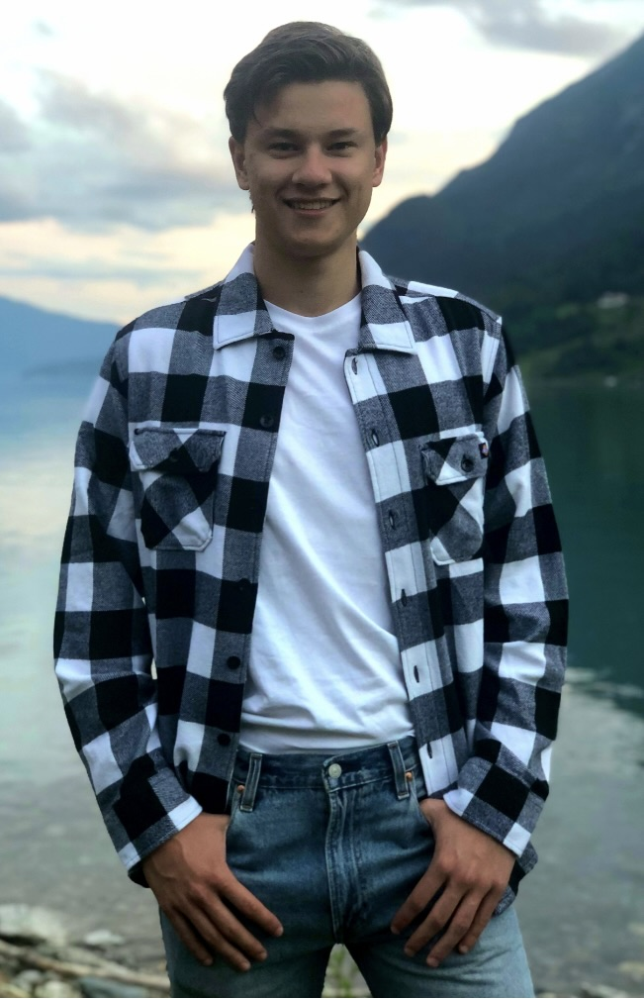
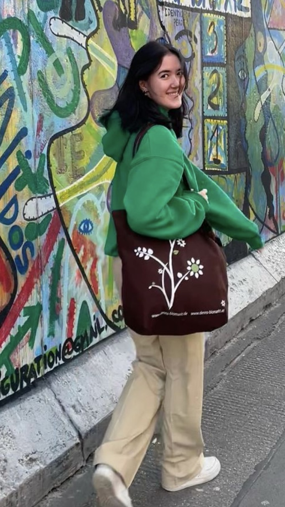
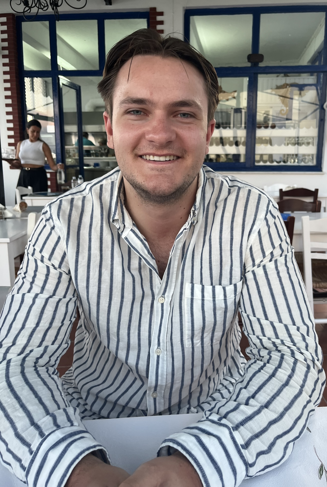

Om oss
Velkommen til Morrofilm - et magisk filmunivers! Siden vår oppstart har vi hatt et enkelt, men viktig mål: å levere den ultimate kinoopplevelsen for store og små. Vi forstår at et besøk til kinoen er mer enn bare en film – det er et avbrekk fra hverdagen, en sjanse til å drømme, og en mulighet til å samles med venner og familie i en felles opplevelse. Vårt dedikerte team jobber utrettelig for å sørge for at hver visning er spesiell. Fra den nyeste teknologien innen bilde og lyd til komfortable seter og en stemningsfull atmosfære, streber vi etter å overgå dine forventninger hver gang du besøker oss. Hos Morrofilm tror vi på magien av film. Så uansett om du er her for en familiefilm, en romantisk date-night, eller en actionfylt blockbuster, ønsker vi deg en uforglemmelig opplevelse med oss.
Teamet bak
Christian Stensøe - CEO
functio Morrofilm AS' dynamiske CEO, Christian Stensøe, finner glede i kinokunst både i jobb og fritid, ofte tilbrakt i filmklubber eller fordypet i filmhistorie. Hans varme og kreativitet farger alt han gjør, enten han utforsker naturens ro eller binder sammen filmfrelste mennesker. Christian er lidenskapelig opptatt av medarbeiderne, og er en leder som er like engasjert i livets hverdagslige øyeblikk som i de store fortellingene på lerretet. - Generert av ChatGPT
Henrik Solheim - CTO
Henrik Solheim, vår CTO, er mannen bak kulissene som sørger for at hver filmvisning er teknisk feilfri. På fritiden finner du ham ofte med nesen begravd i de nyeste teknologibøkene eller i dyp konsentrasjon over et sjakkbrett, noe som vitner om hans strategiske og analytiske tankegang. Hans personlige jakt på balanse mellom teknologi og natur tar ham fra fjelltoppene til elektronikkens mikroverden, og denne dualiteten speiler seg i hans arbeid. Henrik er en CTO som ikke bare forstår kode, men også filmens evne til å berøre menneskesinnet! - Generert av ChatGPT
Celina Ryholt - COO
Celina Ryholt, vår COO, er drivkraften som sørger for at vår virksomhet fungerer som et velsmurt maskineri. Med en bemerkelsesverdig evne til å holde mange baller i luften samtidig, sjonglerer hun jobb, skole og mammarollen som en lek. Utenfor kontoret finner du henne ofte på en joggetur i parken eller i dyp konsentrasjon over et krevende puslespill, noe som gjenspeiler hennes fokuserte og metodiske natur. Celinas blanding av ro, organisasjonstalent og en urokkelig forpliktelse til teamets velvære, gjør henne til en uvurderlig leder hos Morrofilm. Enten det er i arbeidslivet eller personlig, er Celina hjertet som holder timeplanen, strategien og folkene våre i harmoni. - Generert av ChatGPT
Vahideh Rezaei - CFO

Vahideh Rezaei, vår CFO, står ved roret av den finansielle navigeringeren i Morrofilm med et skarpt øye for detaljer og en strategisk forståelse av bærekraftig vekst. Når arbeidsdagen avsluttes, engasjerer hun seg i verdensøkonomiske debatter eller fordypes i klassisk litteratur, noe som speiler hennes analytiske tenkning og dypere forståelse for kulturelle nyanser. Vahideh balanserer finesse i finansiell forvaltning med en dyp kulturell innsikt, noe som gjør henne til en uvurderlig skatt for Morrofilm. Hennes evne til å veve sammen tall med visjon gjør Vahideh til mer enn en CFO – hun er en forteller av vår økonomiske historie. - Generert av ChatGPT
Herman Lous - Summer Intern
Herman Lous, vår summer intern, bringer en frisk bølge av entusiasme og nysgjerrighet til teamet. Mellom arbeidsoppgaver, finner du ham ivrig utforskende i de nyeste filmteknologitrendene eller deltakende i lokale filmfestivaler, noe som bekrefter hans brennende lidenskap for filmindustrien. Selv i de små oppgavene viser Herman en imponerende dedikasjon og en læringsiver som smitter over på hele kontoret. Som en spirrende talent innen bransjen, er Herman allerede i ferd med å sette sitt preg på Morrofilm med sin kreative energi og forfriskende perspektiver. - Generert av ChatGPT